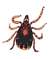

Хотя жители эндемичных по боррелиозу регионов часто подвергаются контакту с клещами, инфекция развивается у них относительно редко. Одной из причин данного явления американские учёные считают наличие протективного эффекта у развивающейся на укус клеща реакции гиперчувствительности.
Хотя жители эндемичных по боррелиозу (болезнь Лайма) регионов довольно часто подвергаются контакту с клещами, инфекция развивается у них относительно редко. Одной из основных гипотез, объясняющих данный факт, является предположение о протективной роли приобретённого иммунитета к протеинам слюны и других тканей клещей, проявляющегося реакцией гиперчувствительности (зуд, гиперемия и отёк в месте укуса). Раннее возникновение зуда позволяет обнаружить и удалить клеща до момента передачи инфекции; локальная воспалительная реакция также препятствует заражению.
Целью исследования, проведённого G. Burke и соавт. (США), являлось изучение причин возникновения реакции гиперчувствительности на укус клеща и оценка её роли в профилактике заражения болезнью Лайма населения эндемичных регионов.
За период с 1991 по 2000 гг. было обследовано 1490 человек. Ежегодно в среднем 27% (95% доверительный интервал (ДИ) 23-31%) участников исследования подвергались одному или более укусам клеща, у 17% (95% ДИ 13-21%) в зоне укуса отмечался зуд, причём вероятность возникновения зуда увеличивалась вдвое при увеличении частоты эпизодов укуса с 1 до 2 (21% и 46%, соответственно) и ещё вдвое при увеличении с 2 до 4 (46% и 97%, соответственно, р<0,001).

При исследовании нимф клеща Ixodes scapularis (I.dammini) частота их инфицирования Borrelia burgdorfery достигала 23%, что позволило прогнозировать максимальную ежегодную заболеваемость боррелиозом в 6,2% (27% укушенных лиц × 23% инфицированных клещей). В действительности ежегодная заболеваемость за исследуемый период была значительно ниже — в среднем 1,74% (95% ДИ 1,1%-2,4%), что подтверждает гипотезу о наличии у населения протективных факторов.
Дальнейший анализ показал, что риск заражения боррелиозом был более высоким при однократном укусе клещом, сопровождавшемся возникновением зуда, (отношение шансов (ОШ) 2,7, 95% ДИ 0,4-2,3) и снижался при 3 и более эпизодах зуда (ОШ 0,18, 95% ДИ 0,05-0,5). В целом, лица, у которых укусы клеща постоянно сопровождались развитием реакции гиперчувствительности, подвергались меньшему риску заражения боррелиозом.
Таким образом, предшествующий контакт с неинфицированными клещами-переносчиками защищает жителей эндемичных регионов от заражения болезнью Лайма. Протективный эффект иммунной реакции на протеин слюны клещей позволяет предположить эффективность разработанной на его основе вакцины в отношении как болезни Лайма, так и других клещевых трансмиссивных инфекций.
Burke G., Wikel S.K., Spielman A., Telford S.R., McKay K., Krause P.J., et al.
Hypersensitivity to Ticks and Lyme Disease Risk.
Emerg Infect Dis 2005; 11(1): 36-41.